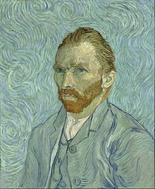
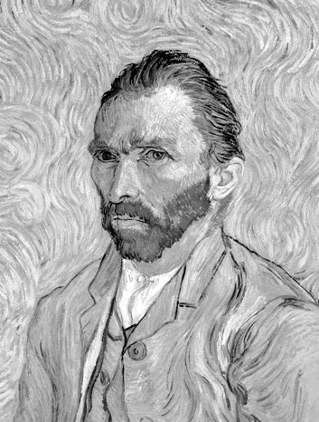
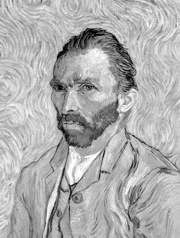
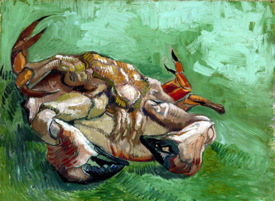
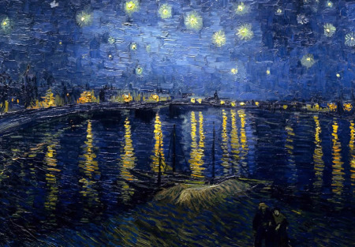
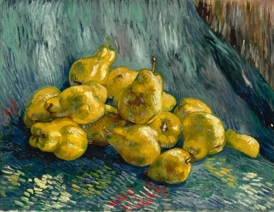

Vincent van Gogh

 

Vincent Willem van Gogh, bajo el nombre artistico de Vincent van Gogh,Pintor holandés. En las décadas finales del siglo XIX, Vincent van Gogh era el mayor de los seis hijos de un pastor protestante, y mantuvo con su hermano Theo, cuatro años menor que él, una relación que sería determinante en su existencia y en su trayectoria artística. La correspondencia que ambos intercambiaron a lo largo de sus vidas testimonia la intimidad de esta relación y las pasiones y angustias humanas y creativas que atormentaron a Van Gogh en sus últimos años. Tras recibir una esmerada educación en un internado privado, a los dieciséis años entró como aprendiz en la filial de La Haya de la galería de arte parisina Goupil, una sociedad de comerciantes de arte fundada por su tío Vincent.
En 1873 pasó a la sucursal de la galería Goupil en Londres, donde hubo de padecer el primero de sus fracasos sentimentales; en 1875 fue trasladado a la filial parisina; en 1876 se despidió y regresó a Holanda. Trabajó después como profesor, ayudante de un pastor metodista y empleado de una librería; ninguno de estos empleos le duró mucho tiempo. Por aquel entonces sentía sobre todo la necesidad espiritual de entregarse a sus semejantes; de hecho, siempre había querido ser pastor, como su padre, y tal vocación lo llevó a Ámsterdam para seguir los estudios de teología, que suspendió.
Un cangrejo de espalda

Estilo: Postimpresionismo
Tipo: Cuadro
Técnica: Óleo
Soporte: Lienzo
Año: 1887
El artista evitaba salir a la intemperie cuando el clima era muy frío y lluvioso, uno de esos días, Vincent concibió esta obra. Movido por las ganas de imitar figuras que había visto en litografías de arte japonés (influencia artística que en occidente se denominó "Japonismo"). Fue más allá, él quería mostrar cómo se reflejaba la luz en el caparazón, el resultado es una obra con muchos detalles del animal.
La noche estrellada sobre el Ródano

Estilo: Postimpresionismo
Tipo: Cuadro
Técnica: Óleo
Soporte: Lienzo
Año: 1888
Se encuentra en: Museo de Orsay, París
Paisaje nocturno con estrellas brillantes reflejadas en el agua.
Marina Les Saintes Maries de la Mer

Estilo: Postimpresionismo
Género: Marina
Tipo: Cuadro
Técnica: Óleo
Soporte: Lienzo
Año: 1888
Se encuentra en: Museo Van Gogh, Ámsterdam
El artista pintó este vibrante paisaje marino, al aire libre, en 1888. Intentó capturar el color del mar. Lo describió como "de un color cambiante".
Bodegón con membrillos

Estilo: Postimpresionismo
Tipo: Cuadro
Técnica: Óleo
Soporte: Lienzo
Año: 1888-89
Se encuentra en: Galería Nuevos Maestros, Colecciones estatales de arte de Dresde, AlemaniaSe trata de una temática escasa en la obra del pintor, la obra presenta 14 membrillos dispuestos sobre una tela azul y fondo de pared marrón. Los detalles de brillo, cromática y sobre todo las pinceladas hacen que la autoría de Vincent sea inmediatamente reconocible.
Irises

Estilo: Postimpresionismo
Tipo: Cuadro
Técnica: Óleo
Soporte: Lienzo
Año: 1889
Se encuentra en: Museo J. Paul Getty, en Los Ángeles, EE. UU.
Este cuadro titulado Irises fue pintado por Van Gogh en 1889, un año antes de su muerte. Para pintar estas flores se inspiró en las que habían en el propio jardín del asilo mental donde se encontraba.Es una obra llena de aire y vida, cada uno de los "Irises" que pintó el artista es único. Van Gogh estudiaba cuidadosamente el movimiento y las formas de la planta para crear una variedad de siluetas entre líneas onduladas, dobladas y rizadas. El cuadro se encuentra actualmente en el museo J. Paul Getty, Estados Unidos.